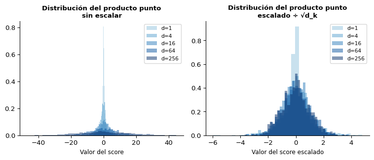
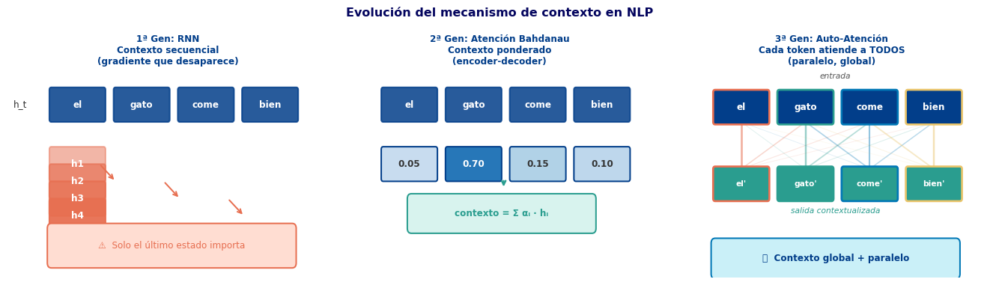
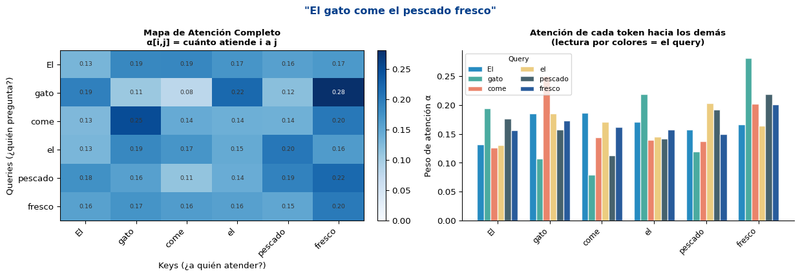
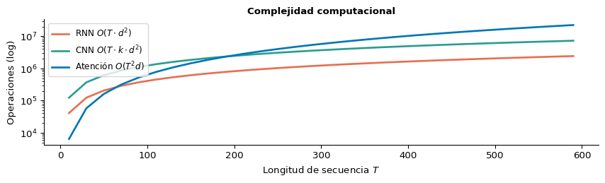
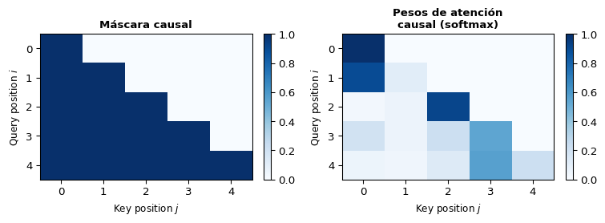

S1: Atención de Producto Escalar (Queries, Keys, Values)
Universidad Católica Boliviana
2026-04-14
Objetivo
Entender el mecanismo de atención de producto escalar — la operación fundamental que permite a cada token “consultar” a todos los demás sin procesamiento secuencial ni ventanas locales.
Prerequisitos: Atención Bahdanau/Luong (Semana 7 S3), CNNs (Semana 8)

\[\alpha_{t,i} = \frac{\exp(e_{t,i})}{\sum_j \exp(e_{t,j})}, \quad e_{t,i} = \mathbf{v}^\top \tanh(\mathbf{W}_h \mathbf{h}_i + \mathbf{W}_s \mathbf{s}_t)\]
\[\mathbf{c}_t = \sum_i \alpha_{t,i} \mathbf{h}_i\]
¿Qué funciona bien? - El decoder mira toda la secuencia encoder ✅ - Resuelve el cuello de botella ✅
¿Qué sigue siendo un problema? - El encoder sigue siendo una RNN → secuencial ⚠️ - Un token encoder no puede “ver” a otros tokens encoder simultáneamente - El contexto de “gato” no sabe nada de “come” hasta que la RNN llega allí
La pregunta clave
¿Y si eliminamos la RNN completamente?
¿Podemos construir representaciones contextuales directamente, sin procesar token por token?
\[\mathbf{h}_i = f(\mathbf{e}_1, \mathbf{e}_2, \ldots, \mathbf{e}_T)\]
donde \(\mathbf{h}_i\) depende de todos los tokens a la vez.
Respuesta: Auto-atención (self-attention)
Imagina un diccionario con claves y valores:
| Clave (Key) | Valor (Value) |
|---|---|
| “recetas de pasta” | [enlace a receta] |
| “tempo de pasta” | [enlace a música] |
| “precio de pasta” | [enlace a mercado] |
Si tu query es “cómo preparar pasta”: - Se compara con cada key - Claves similares → pesos altos - Resultado = combinación ponderada de los values
Cada token genera tres vectores:
\[\mathbf{q}_i = \mathbf{W}_Q \mathbf{e}_i \quad \text{(¿qué busco?)}\] \[\mathbf{k}_i = \mathbf{W}_K \mathbf{e}_i \quad \text{(¿qué ofrezco?)}\] \[\mathbf{v}_i = \mathbf{W}_V \mathbf{e}_i \quad \text{(¿qué comparto?)}\]
Tip
Q, K, V son proyecciones lineales del mismo embedding. Las matrices \(\mathbf{W}_Q, \mathbf{W}_K, \mathbf{W}_V\) se aprenden durante el entrenamiento.
El token \(i\) usa su \(\mathbf{q}_i\) para “preguntar” a todos los demás tokens. Cada token \(j\) responde con su \(\mathbf{k}_j\). La información se transfiere a través de \(\mathbf{v}_j\).
Para el token \(i\) preguntando sobre el token \(j\):
\[s_{ij} = \frac{\mathbf{q}_i \cdot \mathbf{k}_j}{\sqrt{d_k}}\]
\[\alpha_{ij} = \text{softmax}_j(s_{ij}) = \frac{e^{s_{ij}}}{\sum_k e^{s_{ik}}}\]
Cada fila de \(\alpha\) suma a 1 → distribución de probabilidad sobre posiciones.
\[\mathbf{z}_i = \sum_j \alpha_{ij} \mathbf{v}_j\]
El nuevo vector del token \(i\) es la media ponderada de los values, donde los pesos son los \(\alpha_{ij}\).
\[\text{Attention}(\mathbf{Q}, \mathbf{K}, \mathbf{V}) = \text{softmax}\!\left(\frac{\mathbf{Q}\mathbf{K}^\top}{\sqrt{d_k}}\right)\mathbf{V}\]
Donde \(\mathbf{Q}, \mathbf{K}, \mathbf{V} \in \mathbb{R}^{T \times d_k}\) son las matrices de todos los queries, keys y values.
Note
La operación es completamente matricial → se puede ejecutar en paralelo para todos los tokens simultáneamente.
Si \(q_i, k_j \sim \mathcal{N}(0, 1)\) con dimensión \(d_k\):
\[q \cdot k = \sum_{l=1}^{d_k} q_l k_l\]
Media: \(\mathbb{E}[q \cdot k] = 0\)
Varianza: \(\text{Var}[q \cdot k] = d_k\)
→ La desviación estándar del producto punto crece como \(\sqrt{d_k}\)
Con \(d_k\) grande (e.g. 64), los scores pueden ser muy grandes. El softmax se “satura”:
\[\text{softmax}([100, 101, 99]) \approx [0.27, 0.73, 0.00]\]
→ Gradientes muy pequeños → entrenamiento lento o estancado.

Con escalado, la varianza es siempre 1 independientemente de \(d_k\) ✅
import numpy as np
def scaled_dot_product_attention_np(Q, K, V):
"""
Q, K, V: (T, d_k)
Retorna: (T, d_k), (T, T) — salida y pesos de atención
"""
d_k = Q.shape[-1]
# Paso 1: scores de similaridad
scores = Q @ K.T / np.sqrt(d_k) # (T, T)
# Paso 2: softmax por fila
scores_max = scores.max(axis=-1, keepdims=True) # estabilidad numérica
exp_scores = np.exp(scores - scores_max)
attn_weights = exp_scores / exp_scores.sum(axis=-1, keepdims=True) # (T, T)
# Paso 3: salida ponderada
output = attn_weights @ V # (T, d_k)
return output, attn_weights
# Ejemplo sencillo: 5 tokens, d_k=4
np.random.seed(0)
T, d_k = 5, 4
Q = np.random.randn(T, d_k)
K = np.random.randn(T, d_k)
V = np.random.randn(T, d_k)
output, weights = scaled_dot_product_attention_np(Q, K, V)
print("Forma de salida:", output.shape)
print("Forma de pesos:", weights.shape)
print("\nMatriz de atención (redondeada a 2 dec.):")
print(np.round(weights, 2))
print("\nCada fila suma a:", np.round(weights.sum(axis=-1), 4))Forma de salida: (5, 4)
Forma de pesos: (5, 5)
Matriz de atención (redondeada a 2 dec.):
[[0.01 0.29 0.54 0.02 0.14]
[0. 0.79 0.1 0.04 0.07]
[0.17 0.12 0.35 0.16 0.2 ]
[0.06 0.31 0.32 0.09 0.22]
[0.02 0.56 0.19 0.05 0.19]]
Cada fila suma a: [1. 1. 1. 1. 1.]import torch
import torch.nn as nn
import torch.nn.functional as F
class ScaledDotProductAttention(nn.Module):
"""
Mecanismo de atención de producto escalar escalado.
Implementa: Attention(Q, K, V) = softmax(QK^T / sqrt(d_k)) V
"""
def __init__(self, dropout=0.0):
super().__init__()
self.dropout = nn.Dropout(dropout)
def forward(self, Q, K, V, mask=None):
"""
Q: (batch, T_q, d_k)
K: (batch, T_k, d_k)
V: (batch, T_k, d_v)
mask: (batch, T_q, T_k) — opcional, para causal masking
"""
d_k = Q.size(-1)
# Scores: (batch, T_q, T_k)
scores = torch.bmm(Q, K.transpose(1, 2)) / (d_k ** 0.5)
# Máscara causal (para decodificador): -inf en posiciones futuras
if mask is not None:
scores = scores.masked_fill(mask == 0, float('-inf'))
# Pesos de atención
attn_weights = F.softmax(scores, dim=-1)
attn_weights = self.dropout(attn_weights)
# Salida contextualizada
output = torch.bmm(attn_weights, V)
return output, attn_weights
# Prueba
torch.manual_seed(42)
B, T, d_k = 2, 6, 32
Q = torch.randn(B, T, d_k)
K = torch.randn(B, T, d_k)
V = torch.randn(B, T, d_k)
attn = ScaledDotProductAttention(dropout=0.0)
out, weights = attn(Q, K, V)
print(f"Entrada Q: {Q.shape}")
print(f"Salida: {out.shape}")
print(f"Pesos: {weights.shape}")
print(f"\nPesos para batch=0 (redondeados):\n{weights[0].detach().numpy().round(3)}")Entrada Q: torch.Size([2, 6, 32])
Salida: torch.Size([2, 6, 32])
Pesos: torch.Size([2, 6, 6])
Pesos para batch=0 (redondeados):
[[0.121 0.078 0.033 0.693 0.053 0.021]
[0.109 0.102 0.21 0.18 0.32 0.08 ]
[0.57 0.149 0.054 0.091 0.06 0.076]
[0.117 0.132 0.257 0.057 0.318 0.119]
[0.197 0.105 0.028 0.255 0.091 0.324]
[0.07 0.084 0.14 0.253 0.373 0.08 ]]class SelfAttentionLayer(nn.Module):
"""
Auto-atención: proyecta embeddings a Q, K, V y aplica
atención de producto escalar.
"""
def __init__(self, d_model, d_k=None):
super().__init__()
d_k = d_k or d_model
# Proyecciones lineales aprendibles
self.W_Q = nn.Linear(d_model, d_k, bias=False)
self.W_K = nn.Linear(d_model, d_k, bias=False)
self.W_V = nn.Linear(d_model, d_k, bias=False)
self.W_O = nn.Linear(d_k, d_model, bias=False) # proyección de salida
self.attention = ScaledDotProductAttention()
def forward(self, x, mask=None):
"""x: (batch, T, d_model)"""
Q = self.W_Q(x) # (batch, T, d_k)
K = self.W_K(x) # (batch, T, d_k)
V = self.W_V(x) # (batch, T, d_k)
out, weights = self.attention(Q, K, V, mask)
return self.W_O(out), weights # (batch, T, d_model)
# Aplicado sobre embeddings de texto
d_model = 64
self_attn = SelfAttentionLayer(d_model=d_model, d_k=32)
# Simular batch de textos tokenizados
batch_size, seq_len = 4, 10
x = torch.randn(batch_size, seq_len, d_model) # (B, T, d_model)
out, attn_weights = self_attn(x)
print(f"Entrada: {x.shape}")
print(f"Salida: {out.shape} ← mismas dimensiones")
print(f"Pesos: {attn_weights.shape} ← T×T por ejemplo del batch")
npar = sum(p.numel() for p in self_attn.parameters())
print(f"Parámetros: {npar:,} (solo W_Q, W_K, W_V, W_O)")Entrada: torch.Size([4, 10, 64])
Salida: torch.Size([4, 10, 64]) ← mismas dimensiones
Pesos: torch.Size([4, 10, 10]) ← T×T por ejemplo del batch
Parámetros: 8,192 (solo W_Q, W_K, W_V, W_O)
Con entrenamiento real sobre datos lingüísticos: - “gato” (sujeto) atiende fuertemente a “come” (verbo) - “fresco” (adjetivo) atiende a “pescado” (sustantivo) - “el” (artículo) atiende al sustantivo siguiente
Nota sobre los pesos “aleatorios”
En el experimento anterior, los pesos \(\mathbf{W}_Q, \mathbf{W}_K, \mathbf{W}_V\) son aleatorios (sin entrenar). Los mapas muestran la estructura del mecanismo, no dependencias lingüísticas reales.
Con un Transformer entrenado (como BERT), los mapas capturan: - Relaciones sintácticas (sujeto-verbo) - Correferencialidad (pronombre → antecedente) - Modificación (adjetivo → sustantivo)
Ref: Vig (2019), Clark et al. (2019) — interpretabilidad de BERT
| Propiedad | RNN | CNN | Auto-Atención |
|---|---|---|---|
| Procesamiento | Secuencial | Paralelo | Paralelo |
| Complejidad por capa | \(O(T \cdot d^2)\) | \(O(T \cdot k \cdot d^2)\) | \(\mathbf{O(T^2 \cdot d)}\) |
| Distancia máxima entre tokens | \(O(T)\) | \(O(T/k)\) | \(\mathbf{O(1)}\) |
| Operaciones secuenciales | \(O(T)\) | \(O(1)\) | \(\mathbf{O(1)}\) |
| Contexto | Local (LSTM mitiga) | Local (\(k\)) | Global |
Tip
Distancia \(O(1)\): el token 1 puede atender directamente al token 512 en una sola operación. En una RNN necesitaría 511 pasos de recurrencia.

En encoder (p.ej. BERT): un token puede atender a todos los demás (bidireccional).
En decoder (p.ej. GPT): al generar el token \(t\), solo puede atender a los tokens anteriores (\(1, \ldots, t-1\)). No debe “ver el futuro”.
Solución: máscara triangular inferior
\[M_{ij} = \begin{cases} 0 & \text{si } j > i \quad (\text{futuro}) \\ 1 & \text{si } j \leq i \quad (\text{pasado/presente}) \end{cases}\]
Se aplica como: scores[M == 0] = -∞ → después del softmax → peso ≈ 0
T = 5
# Máscara triangular inferior
mask = torch.tril(torch.ones(T, T))
print("Máscara causal (1=visible, 0=enmascarado):")
print(mask.int().numpy())
# Aplicación sobre scores
scores_ex = torch.randn(1, T, T)
scores_masked = scores_ex.masked_fill(
mask.unsqueeze(0) == 0, float('-inf')
)
attn_causal = F.softmax(scores_masked, dim=-1)
import matplotlib.pyplot as plt
fig, axes = plt.subplots(1, 2, figsize=(8, 3))
for ax, data, title in zip(
axes,
[mask.numpy(), attn_causal[0].detach().numpy()],
['Máscara causal', 'Pesos de atención\ncausal (softmax)']):
im = ax.imshow(data, cmap='Blues', aspect='auto')
ax.set_title(title, fontsize=10, fontweight='bold')
ax.set_xlabel("Key position $j$", fontsize=9)
ax.set_ylabel("Query position $i$", fontsize=9)
plt.colorbar(im, ax=ax, fraction=0.046)
plt.tight_layout()
plt.show()Máscara causal (1=visible, 0=enmascarado):
[[1 0 0 0 0]
[1 1 0 0 0]
[1 1 1 0 0]
[1 1 1 1 0]
[1 1 1 1 1]]
# Usando un vocabulario y tokenización simples
words = [
'el', 'gato', 'come', 'pescado', 'fresco',
'un', 'perro', 'corre', 'rápido', 'lento',
'la', 'niña', 'lee', 'libro', 'nuevo',
]
vocab = {w: i + 4 for i, w in enumerate(words)}
vocab.update({'<PAD>': 0, '<UNK>': 1, '<BOS>': 2, '<EOS>': 3})
oraciones = [
['el', 'gato', 'come', 'pescado', 'fresco'],
['un', 'perro', 'corre', 'rápido'],
['la', 'niña', 'lee', 'el', 'libro', 'nuevo'],
]
MAX_LEN = 8
def tokenize(sent):
ids = [vocab.get(w, 1) for w in sent]
ids = ids[:MAX_LEN] + [0] * max(0, MAX_LEN - len(ids))
return ids
tokens_batch = torch.tensor([tokenize(s) for s in oraciones]) # (3, 8)
# Capa de embedding + self-attention
torch.manual_seed(0)
d_model = 32
emb_layer = nn.Embedding(max(vocab.values()) + 10, d_model, padding_idx=0)
attn_layer = SelfAttentionLayer(d_model=d_model, d_k=16)
with torch.no_grad():
embs = emb_layer(tokens_batch) # (3, 8, 32)
out, weights = attn_layer(embs) # (3, 8, 32), (3, 8, 8)
print("Tokens batch:", tokens_batch.shape)
print("Embeddings: ", embs.shape)
print("Salida: ", out.shape)
print("Pesos: ", weights.shape)
print(f"\nPesos de atención — oración 0 '{' '.join(oraciones[0])}':")
print(weights[0, :5, :5].numpy().round(3))Tokens batch: torch.Size([3, 8])
Embeddings: torch.Size([3, 8, 32])
Salida: torch.Size([3, 8, 32])
Pesos: torch.Size([3, 8, 8])
Pesos de atención — oración 0 'el gato come pescado fresco':
[[0.149 0.098 0.16 0.092 0.125]
[0.149 0.091 0.16 0.116 0.135]
[0.144 0.161 0.108 0.141 0.092]
[0.108 0.141 0.095 0.143 0.115]
[0.131 0.095 0.137 0.151 0.137]]\[\text{Attention}(\mathbf{Q}, \mathbf{K}, \mathbf{V}) = \text{softmax}\!\left(\frac{\mathbf{Q}\mathbf{K}^\top}{\sqrt{d_k}}\right)\mathbf{V}\]
Tres ingredientes: - \(\mathbf{Q}\) — “¿qué estoy buscando?” - \(\mathbf{K}\) — “¿qué puedo ofrecerte?” - \(\mathbf{V}\) — “¿qué información te doy?”
Por qué \(\sqrt{d_k}\): estabiliza la varianza del producto punto, evita saturación del softmax.
Complejidad: \(O(T^2 \cdot d)\) — cuadrática en longitud, pero completamente paralela.
| RNN | CNN | Atención | |
|---|---|---|---|
| Contexto global | ⚠️ | ❌ | ✅ |
| Paralelo | ❌ | ✅ | ✅ |
| Distancia O(1) | ❌ | ❌ | ✅ |
→ Próxima sesión: Multi-Head Attention + Codificación Posicional
Note
Problema a resolver: si aplicamos auto-atención una sola vez, el modelo ve el espacio semántico desde una única perspectiva. ¿Qué pasa si queremos capturar múltiples tipos de relaciones simultáneamente?
Ejemplo: “banco” puede significar: - Institución financiera (relación semántica) - Objeto para sentarse (relación visual) - Orilla de un río (relación espacial)
Multi-Head Attention: \[\text{MultiHead}(Q,K,V) = \text{Concat}(\text{head}_1, \ldots, \text{head}_h)\mathbf{W}^O\]
donde cada cabeza aprende una proyección diferente.
¿Por qué necesitamos codificación posicional?
La auto-atención es invariante a permutaciones — shufflear los tokens no cambia la salida (solo los pesos):
# Esto produce la misma salida (!)
out1, _ = attn(Q, K, V)
# Permutar tokens
perm = [2, 0, 3, 1, 4]
out2, _ = attn(Q[:, perm], K[:, perm], V[:, perm])Los Transformers necesitan ingresar el orden explícitamente.
Vaswani et al. (2017) — Attention is All You Need, Secciones 3.2 y 3.3
¡Gracias!
📧 fsuarez@ucb.edu.bo
🔗 Materiales: github.com/fjsuarez/ucb-nlp
NLP y Análisis Semántico | Semana 9